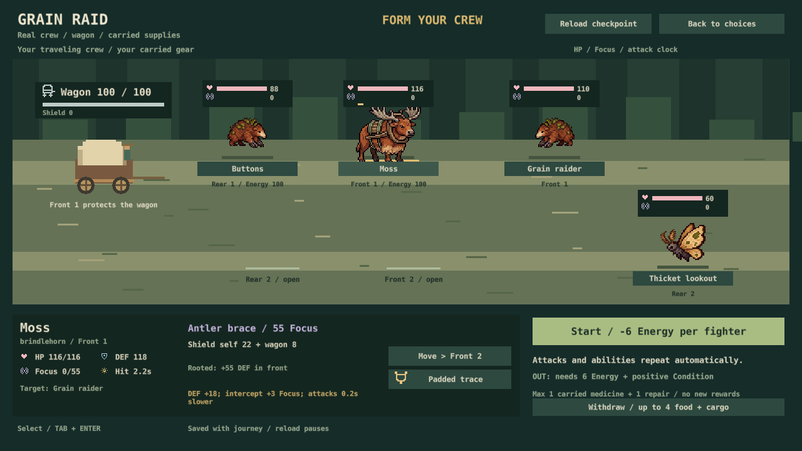
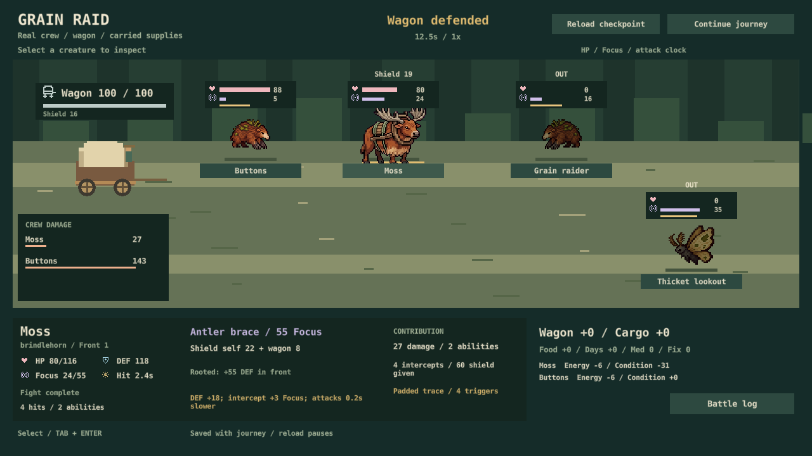

S30 / November 1, 2026
Your crew. Your wagon. Real stakes.
New expeditions now use the wagon battlefield for road encounters. Existing journeys keep their original combat rules. This is a progress report; no decisions or repeat votes.

Inspect. Arrange. Defend.
One to three travelers use their own health, abilities and carried equipment. Arrange the front and rear, then watch attacks and skills repeat automatically. Back preserves the original encounter until the first action. Each participating creature spends 6 Energy once. Exhausted companions sit out; withdrawal remains available.

Basic attacks make a small forward lunge; abilities lift the creature slightly. Reduced motion disables both. No new artwork or large animation pass.
What carries forward
Injuries, wagon damage and used supplies persist once. Pause for at most one real medicine and one repair. Victory adds no invented rewards. Defeat or withdrawal clearly costs food/cargo for scavengers, or a day and meals around ridge territory. Normal wagon hits do not also damage cargo.

Checked from two developer perspectives
New-player lens: read the setup cost, identify the defender, inspect a repeated skill and read the result. The exhausted screen needed clearer per-creature Energy/resting labels; those are already fixed.
Expert lens: tested free inspection, reroll prevention, owned gear, save failure, item spending, retreat, result acknowledgement and fast/resumed playback. No duplicate charges found in the regression suite. Already fixed: calling for help mid-fight now retains injuries already taken.
148 Lua scenarios, native saves in both depot modes, actual release-rendered GUI interactions and five 1280×720 captures pass. Physical input, audio listening and human enjoyment/pacing remain open S10 checks.
The trail still matters
480 fixed-policy journeys, all repeated exactly, compare the same 40 seeds in Classic and Discovery. All 80 peaceful pairs have identical complete outcomes. Fighting policies encounter the same 33/29 battles, with new fights averaging 14.7/16.5 seconds of simulation. No added forced encounters.
Classic fighting deliveries rise from 9 to 13 of 40. Discovery rises from 4 to 6, but rescues also rise from zero to two; its crews lose 10 of 29 fights. These bots use default formations and no combat supplies. Solo balance needs observation, not a claim that every build is finished.
Comparison data and source hashes · Updated 20-second trailer